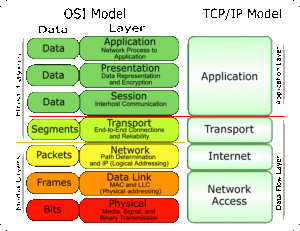
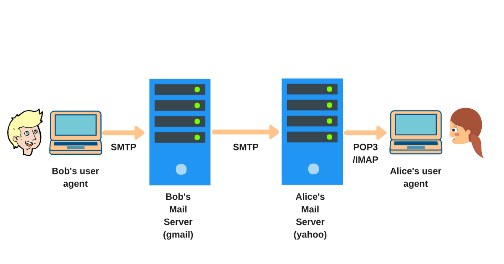
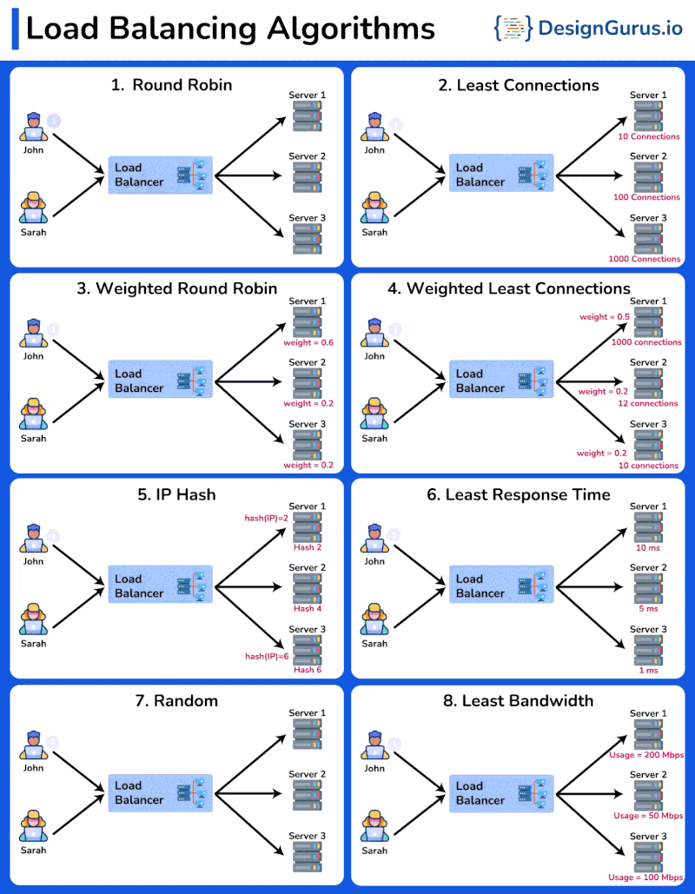

Computer Networking
Protocol
Protocol refers to a set of rules and conventions that define how data is transmitted, received, and processed between devices and systems connected to the network. These rules ensure that devices can understand and communicate with each other effectively, enabling the seamless exchange of information across the internet.
TCP (Transmission Control Protocol)
Imagine sending a letter through the postal service. TCP is like a reliable, organized courier service that guarantees the letter's delivery.
TCP ensures that data is transmitted in a precise, ordered manner, and it makes sure that the data arrives without errors. If a packet of data is lost or damaged during transmission, TCP requests the missing data to be sent again until everything is received correctly.
It is commonly used for applications that require accurate data delivery, like web pages, emails, and file downloads.
HTTP (Hypertext Transfer Protocol)
HTTP is like a set of rules that web browsers and web servers follow to communicate with each other. It's the language they use to exchange web pages and other resources.
When you type a website address (URL) into your browser and hit Enter, your browser sends an HTTP request to the web server asking for the webpage. The server responds with the requested webpage, and your browser displays it for you to see.
HTTP is the foundation of the World Wide Web, allowing us to access websites and navigate the internet.
UDP (User Datagram Protocol)
UDP is like a fast, simple, but less reliable delivery service. It's useful for scenarios where speed is more important than guaranteed delivery.
Unlike TCP, UDP doesn't ensure that data arrives in order or without errors. It just sends the data as quickly as possible. If some data packets are lost during transmission, UDP does not request retransmission.
It is commonly used for real-time applications like video streaming, online gaming, and VoIP (Voice over Internet Protocol), where slight delays are acceptable and retransmission might cause more issues than it solves.
Router
Every Router/Modem has Global IP address, this IP address is shared to each device(computer/mobile) that connected to Router/Modem.
for eg: If you run multiple applications as google, whatsapp and send request to internet, the device configure to send back response to particular Application using Port number.
In simple IP address is to figure out which device/router you are using and Port number is to find from which Application response need to send.
Port Number

Well-Known Ports (0-1023): Port numbers from 0 to 1023 are reserved for well-known services. Many of these ports are standardized for specific applications and protocols. For example, port 80 is commonly used for HTTP, port 443 for HTTPS, and port 22 for SSH.
Registered Ports (1024-49151): Port numbers from 1024 to 49151 are assigned to registered services. These ports are used for various applications and services, and some have been officially registered with the Internet Assigned Numbers Authority (IANA). for eg: SQL = 1433
MongoDB = 27017
Dynamic/Private Ports (49152-65535): Port numbers from 49152 to 65535 are considered dynamic or private ports. They are used for temporary or private purposes, and they are less likely to be officially registered with IANA.
How to check open ports in linux and window
Linux
sudo netstat -tuln
or
sudo netstat -tulnp | grep :<port_number>
sudo kill -9 <PID> ## Delete local host running backend using netstat
Explanation:
-t: Show TCP ports.
-u: Show UDP ports.
-l: Show only listening ports.
-n: Show numerical addresses instead of resolving host names.
Windows
netstat -ano | findstr <port-number>
or
netstat -a -o | find "9090"
taskkill /F /PID 12345 ## Delete local host running backend using netstat
Explanation:
-a: Displays all connections and listening ports.
-n: Displays addresses and port numbers in numerical form.
-o: Displays the process ID associated with each connection.
Internet speed
OSI Model

The OSI (Open Systems Interconnection) model is a conceptual framework that standardizes the functions of a telecommunication or computing system into seven distinct layers. The model was developed by the International Organization for Standardization (ISO) to promote interoperability and facilitate communication between different systems and devices. Each layer in the OSI model represents a specific set of functions and services, and it helps in understanding and troubleshooting network communication.
The seven layers of the OSI model, from the bottom to the top, are as follows:
Physical Layer (Layer 1)
The physical layer is responsible for transmitting raw bits over a physical medium, such as cables or wireless signals. It defines the electrical, mechanical, and procedural aspects of data transmission, such as voltage levels, cable types, and physical connectors.
Data Link Layer (Layer 2)
The data link layer is responsible for reliable data transfer between directly connected devices on the same network segment.
It provides error detection and correction, and it ensures that data frames are transmitted and received correctly.
Network Layer (Layer 3)
The network layer is responsible for routing data packets between different networks.
It handles logical addressing, like IP addresses, and determines the best path for data to reach its destination.
Transport Layer (Layer 4)
The transport layer provides end-to-end communication between devices on different networks.
It ensures reliable data delivery, flow control, and error recovery using protocols like TCP (Transmission Control Protocol) and UDP (User Datagram Protocol).
Session Layer (Layer 5)
The session layer establishes, maintains, and terminates connections (sessions) between applications on different devices.
It manages dialogues between applications, synchronization, and check pointing for data exchange.
Presentation Layer (Layer 6)
The presentation layer is responsible for data representation and encryption/decryption if needed.
It translates data between the application format and the network format, ensuring that both systems can understand each other.
Application Layer (Layer 7)
The application layer is the topmost layer that directly interacts with user applications and services.
It provides network services to end-users, such as email, file transfer, web browsing, and other network applications.
TCP/IP
The TCP/IP model, also known as the Internet Protocol Suite, is a conceptual framework used to understand and implement network communication in the context of the internet. It was developed by the United States Department of Defense and is the foundation of the modern internet and many other computer networks. The TCP/IP model consists of four layers, each with specific functionalities:
Application Layer
The Application Layer is the topmost layer and directly interacts with user applications and services. It provides network services to end-users and enables applications to communicate with the network. Protocols at this layer include HTTP (for web browsing), SMTP (for email), FTP (for file transfer), and DNS (for domain name resolution).
Transport Layer
The Transport Layer is responsible for end-to-end communication between devices on different networks. It ensures reliable data delivery, flow control, and error recovery. Two main protocols at this layer are TCP (Transmission Control Protocol) and UDP (User Datagram Protocol). TCP provides reliable and ordered data delivery, while UDP is used for faster but less reliable data transmission.
Internet Layer
The Internet Layer is responsible for routing data packets between different networks. It handles logical addressing, such as IP addresses, and determines the best path for data to reach its destination. The core protocol at this layer is IP (Internet Protocol), which provides the unique addressing scheme necessary for devices to communicate across the internet.
Link Layer
The Link Layer, also known as the Network Interface Layer or Data Link Layer, is responsible for reliable data transfer between directly connected devices on the same network segment. It defines how data frames are transmitted and received over the physical medium, such as Ethernet or Wi-Fi. Various technologies and protocols, such as Ethernet, Wi-Fi (IEEE 802.11), and PPP (Point-to-Point Protocol), operate at this layer.
OSI vs TCP/IP

HTTPS Request

HTTPS Status Code

SMTP: (Sender Mail Transfer Protocol)

HTTP: Hyper Text Transfer Protocol

HTTPS

HTTP vs HTTPS

DNS Architecture
Load balancer Algorithm

Some of the Important Port Number
- 𝐃𝐨𝐜𝐤𝐞𝐫 𝐃𝐚𝐞𝐦𝐨𝐧: -Port: 2375 (unencrypted) and 2376 (encrypted)
- 𝐉𝐞𝐧𝐤𝐢𝐧𝐬: -Runs on 𝐇𝐓𝐓𝐏 ğ©ğ¨ğ«ğ 8080 𝐨r 𝐇𝐓𝐓𝐏𝐒 ğ©ğ¨ğ«ğ 8443
- 𝐇𝐓𝐓𝐏 (ğ‡ğ²ğ©ğğ«ğğğ±ğ 𝐓𝐫𝐚𝐧𝐬𝐟𝐞𝐫 ğğ«ğ¨ğğ¨ğœğ¨ğ¥):- Default Port: 80
- 𝐇𝐓𝐓𝐏𝐒 (ğ‡ğ²ğ©ğğ«ğğğ±ğ 𝐓𝐫𝐚𝐧𝐬𝐟𝐞𝐫 ğğ«ğ¨ğğ¨ğœğ¨ğ¥ 𝐒𝐞𝐜𝐮𝐫𝐞): - Default Port: 443
- 𝐒𝐒𝐇 (𝐒𝐞𝐜𝐮𝐫𝐞 𝐒𝐡𝐞𝐥𝐥): - Default Port: 22
- 𝐅𝐓𝐏 (𝐅𝐢𝐥𝐞 𝐓𝐫𝐚𝐧𝐬𝐟𝐞𝐫 ğğ«ğ¨ğğ¨ğœğ¨ğ¥): - Control Port: 21 - Data Port: 20
- 𝐒𝐌𝐓𝐏 (𝐒𝐢𝐦𝐩𝐥𝐞 𝐌𝐚𝐢𝐥 𝐓𝐫𝐚𝐧𝐬𝐟𝐞𝐫 ğğ«ğ¨ğğ¨ğœğ¨ğ¥): - Port: 25
- 𝐃𝐍𝐒 (𝐃𝐨𝐦𝐚𝐢𝐧 𝐍𝐚𝐦𝐞 ğ’ğ²ğ¬ğğğ¦): - Port: 53
- 𝐑𝐃𝐏 (ğ‘ğğ¦ğ¨ğğ ğƒğğ¬ğ¤ğğ¨ğ© ğğ«ğ¨ğğ¨ğœğ¨ğ¥): - Port: 3389
- 𝐌𝐲𝐒𝐐𝐋 ğƒğšğğšğ›ğšğ¬ğ: - Port: 3306
- ğğ¨ğ¬ğğ ğ«ğğ’ğğ‹ ğƒğšğğšğ›ğšğ¬ğ: - Port: 5432
- ğŒğ¨ğ§ğ ğ¨ğƒğ: - Port: 27017
- ğŠğ®ğ›ğğ«ğ§ğğğğ¬ 𝐀𝐏𝐈 𝐒𝐞𝐫𝐯𝐞𝐫: - Port: 6443
- ğğ ğ¢ğ§ğ±: - Default HTTP Port: 80 - Default HTTPS Port: 443
- ğ„ğ¥ğšğ¬ğğ¢ğœğ¬ğğšğ«ğœğ¡: - Port: 9200
- 𝐀𝐩𝐚𝐜𝐡𝐞 ğ“ğ¨ğ¦ğœğšğ: - Default HTTP Port: 8080 - Default HTTPS Port: 8443
- ğğ«ğ¨ğ¦ğğğ¡ğğ®ğ¬: - Port: 9090
- 𝐆𝐫𝐚𝐟𝐚𝐧𝐚: - Default HTTP Port: 3000
- ğ†ğ¢ğ: - SSH Port: 22 - Git Protocol Port: 9418
API
Api Architecture Styles
Proxy
A proxy server acts as an intermediary between a client and the internet.
How it works
-
Client Request: When a client (like a web browser) wants to access a resource (like a webpage), it sends a request to the proxy server instead of directly contacting the target server.
-
Forwarding the Request: The proxy server receives the request and forwards it to the target server on behalf of the client.
-
Response Handling: The target server processes the request and sends the response back to the proxy server.
-
Returning the Response: The proxy server receives the response and then sends it back to the client.
Benefits of Using a Proxy
- Anonymity: Hides the client's IP address from the target server.
- Caching: Stores copies of frequently accessed resources to speed up future requests.
- Access Control: Filters and controls user access to certain websites or content.
- Security: Can provide additional security measures, such as encryption or threat detection.
Types of Proxies
-
Forward Proxies: Handle requests from clients to external servers.
-
Reverse Proxies: Handle requests from clients to a server, often used for load balancing and caching.
-
Transparent Proxies: Intercept communication without modifying requests or responses.
-
Anonymous Proxies: Hide the client's IP address but may identify themselves as a proxy.
By acting as a go-between, proxies enhance security, performance, and control over internet traffic.
In the realm of networking, proxies play a crucial role in enhancing security, performance, and content delivery. Let’s understand the key distinctions between the two types of proxies:
forward and reverse.
Forward proxy
Forward proxy is a client-side proxy that acts on behalf of clients. In this proxy, the client makes a request to the forward proxy to connect with the servers. After that, the forward proxy makes a request to the servers to get the response and send it back to the client.
Forward proxy protects the client's identity by not letting the servers know about clients. In simple words, servers think that the forward proxy makes all the requests, while it can be coming from multiple clients.
It is used for client anonymity, traffic control, encryption, caching, etc.
Reverse proxy
REverse proxy is a server-side proxy that sits in front of servers. In this, the client makes a request to the reverse proxy. Then the reverse proxy makes a request to the servers and returns the response to the client.
Reverse proxy protects the server’s identity by not letting the clients know about servers. In simple words, clients think that the reverse proxy serves all the requests, while behind there can be multiple servers.
It is used for server anonymity, load balancing, DDoS protection, etc.
Some of the Best Documentation Links
Troubleshoot Networking
This guide provides common network troubleshooting commands to help diagnose and resolve network issues.
-
Ipconfig
The
ipconfigcommand is used to display the IP configuration of your network interfaces. To get detailed information about all interfaces, use the following:This command will display the IP address, subnet mask, default gateway, DNS servers, and other important network-related information for all network adapters on your system.
-
NSLOOKUP (Forward DNS Lookup)
NSLOOKUP is used to query the DNS (Domain Name System) to resolve a domain name to an IP address. For a forward DNS lookup, you can use the following command:
This command will resolve google.com to its corresponding IP address.
-
NSLOOKUP (Reverse DNS Lookup)
To perform a reverse DNS lookup, you can use an IP address and query the DNS to get the associated domain name. Here’s the command for a reverse DNS lookup:
This will resolve the given IP address to its associated domain name.
-
Ping
The ping command is used to check if a network device (such as a router or server) is reachable. It sends a small data packet to the target device and waits for a response. Use the following syntax to ping a device:
This will test the connection to Google’s servers.
-
Tracert (Traceroute)
tracert (on Windows) or traceroute (on Linux/Mac) is used to trace the path packets take to reach a destination. It shows each hop along the route from your computer to the target address.
Example command:
This command shows the route taken by packets from your computer to Google's servers, including the time it takes to reach each hop.
-
Netstat
The netstat command is used to display network statistics, including active connections, listening ports, and protocol usage. To view all network connections and statistics, run:
You can use various options with netstat to filter and display specific network information.